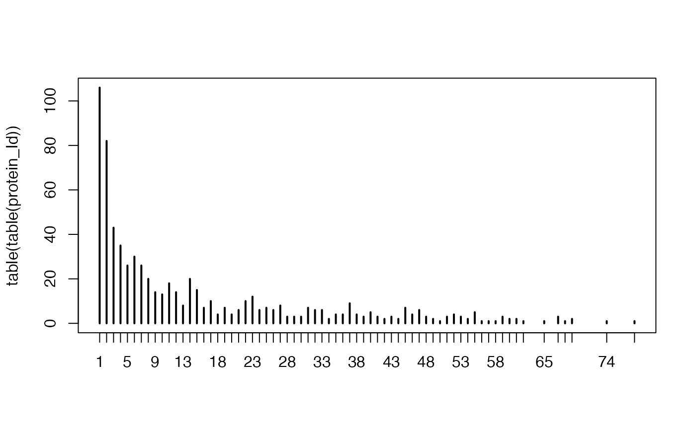
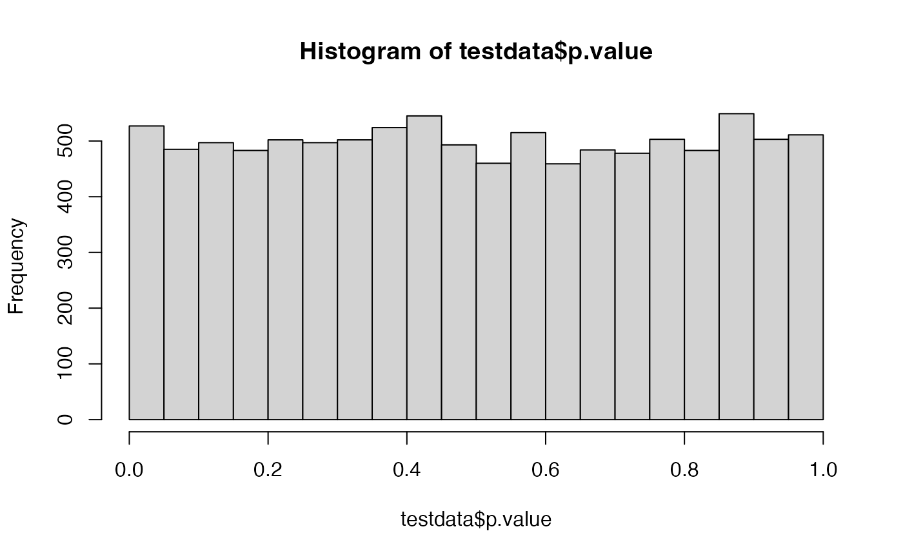
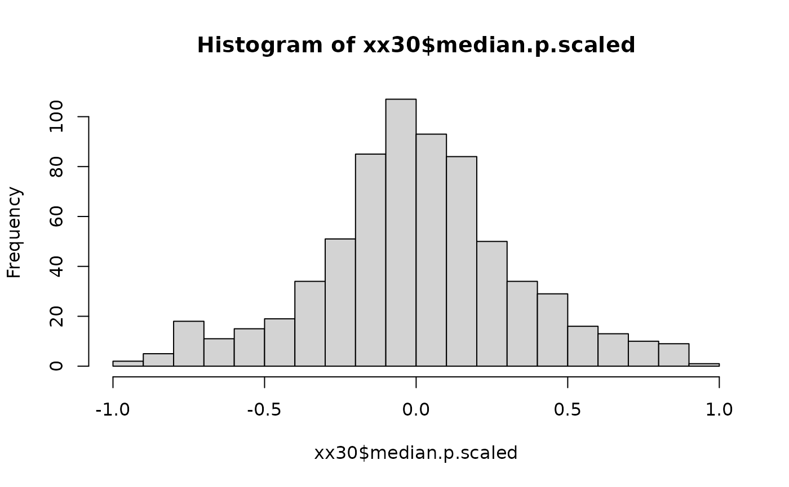
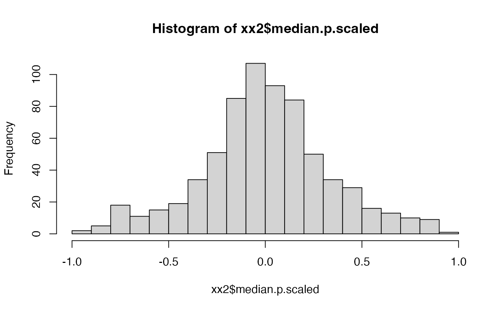
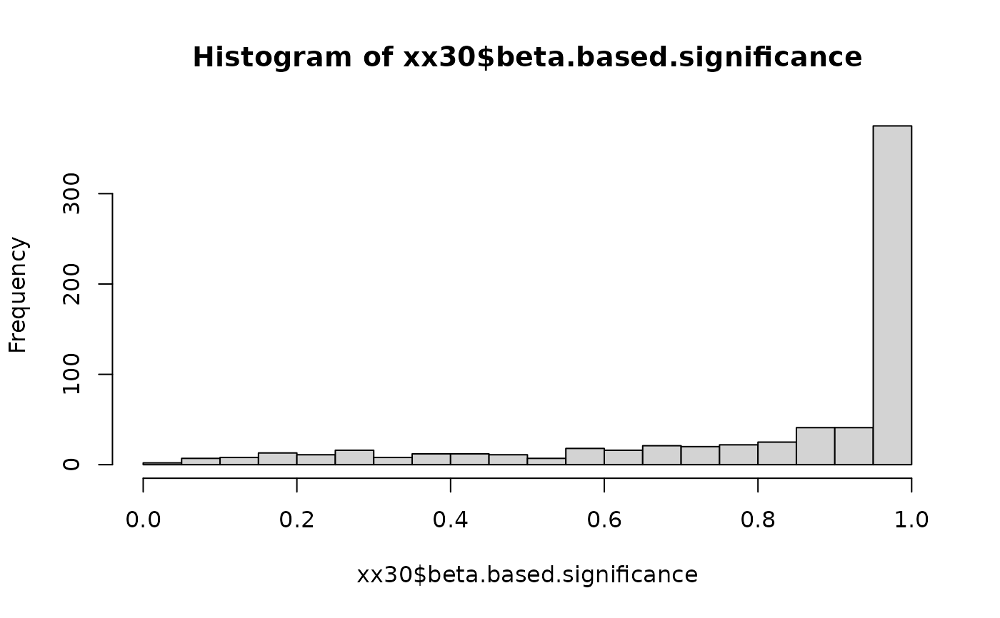
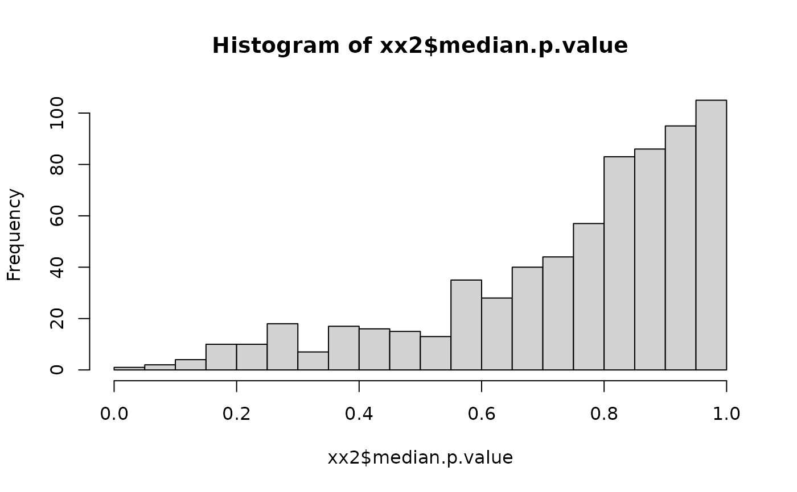
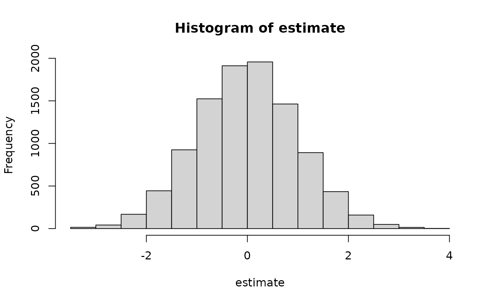

compute protein level fold changes and p.values (using beta distribution) takes p-value of the scaled p-value
Source:R/tidyMS_R6_Modelling.R
summary_ROPECA_median_p.scaled.Rdcompute protein level fold changes and p.values (using beta distribution) takes p-value of the scaled p-value
Usage
summary_ROPECA_median_p.scaled(
contrasts_data,
contrast = "contrast",
subject_Id = "protein_Id",
estimate = "diff",
statistic = "statistic",
p.value = "moderated.p.value",
max.n = 10
)Arguments
- contrasts_data
data frame
- contrast
name of column with contrast identifier
- subject_Id
name of column with typically protein Id
- estimate
name of column with effect size estimate
- statistic
statistic name of column with statistic (typically t-statistics)
- p.value
name of column with moderated.p.value
- max.n
used to limit the number of peptides in probablity computation.
See also
Other modelling:
Contrasts,
ContrastsDEqMSFacade,
ContrastsFirth,
ContrastsFirthFacade,
ContrastsLMFacade,
ContrastsLMImputeFacade,
ContrastsLMMissingFacade,
ContrastsLimma,
ContrastsLimmaFacade,
ContrastsLmerFacade,
ContrastsMissing,
ContrastsModerated,
ContrastsModeratedDEqMS,
ContrastsPlotter,
ContrastsRLMFacade,
ContrastsROPECA,
ContrastsROPECAFacade,
ContrastsTable,
INTERNAL_FUNCTIONS_BY_FAMILY,
LR_test(),
Model,
ModelFirth,
ModelLimma,
build_contrast_analysis(),
build_model(),
build_model_glm_peptide(),
build_model_glm_protein(),
build_model_impute(),
build_model_limma(),
build_model_logistf(),
compute_borrowed_variance(),
contrasts_fisher_exact(),
get_anova_df(),
get_complete_model_fit(),
get_p_values_pbeta(),
group_label(),
impute_refit_singular(),
isSingular_lm(),
linfct_all_possible_contrasts(),
linfct_factors_contrasts(),
linfct_from_model(),
linfct_matrix_contrasts(),
merge_contrasts_results(),
model_analyse(),
model_summary(),
moderated_p_deqms(),
moderated_p_deqms_long(),
moderated_p_limma(),
moderated_p_limma_long(),
my_contest(),
my_contrast(),
my_contrast_V2(),
new_lm_imputed(),
pivot_model_contrasts_2_Wide(),
plot_lmer_peptide_predictions(),
sim_build_models_lm(),
sim_build_models_lmer(),
sim_build_models_logistf(),
sim_make_model_lm(),
sim_make_model_lmer(),
strategy_limma(),
strategy_logistf()
Examples
set.seed(10)
nrPep <- 10000
nrProtein <- 800
p.value <- runif(nrPep)
estimate <- rnorm(nrPep)
avgAbd <- runif(nrPep)
protein_Id <- sample(1:800, size = nrPep,
replace = TRUE, prob = dexp(seq(0,5,length = 800)))
plot(table(table(protein_Id)))

testdata <- data.frame(contrast = "contrast1",
protein_Id = protein_Id,
estimate = estimate,
pseudo_estimate = estimate,
p.value = p.value,
avgAbd = avgAbd )
xx30 <- summary_ROPECA_median_p.scaled(testdata,
subject_Id = "protein_Id",
estimate = "estimate",
p.value = "p.value",
max.n = 30)
xx2 <- summary_ROPECA_median_p.scaled(testdata,
subject_Id = "protein_Id",
estimate = "estimate",
p.value = "p.value",
max.n = 1)
testthat::expect_equal(mad(xx2$estimate, na.rm = TRUE),0.384409, tolerance = 1e-4)
testthat::expect_equal(median(xx2$estimate), -0.006874857, tolerance = 1e-4)
testthat::expect_equal(xx2$beta.based.significance[1],0.819, tolerance = 1e-3)
testthat::expect_equal(xx2$beta.based.significance[2],0.9234362,tolerance = 1e-3)
# Uniform distribution
hist(testdata$p.value)

hist(xx30$median.p.scaled, breaks = 20)

hist(xx2$median.p.scaled, breaks = 20)

# shows that beta.based.significance has NO uniform distribution
# although H0 is true for all cases.
hist(xx30$beta.based.significance, breaks = 20)

hist(xx2$beta.based.significance, breaks = 20)
hist(xx2$median.p.value, breaks = 20)

hist(xx2$beta.based.significance, breaks = 20)
 hist(estimate)
hist(estimate)
